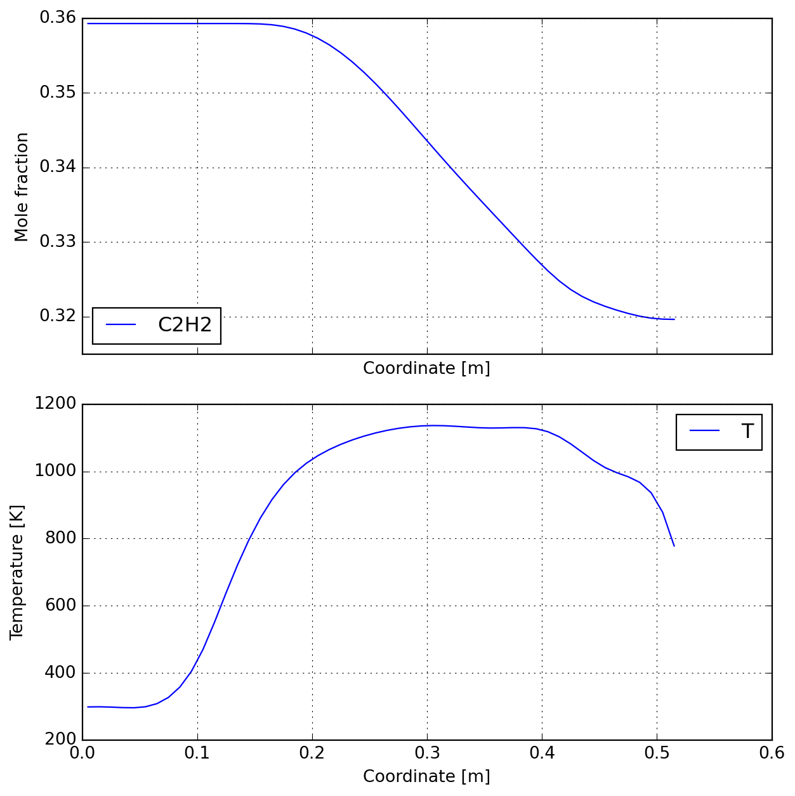
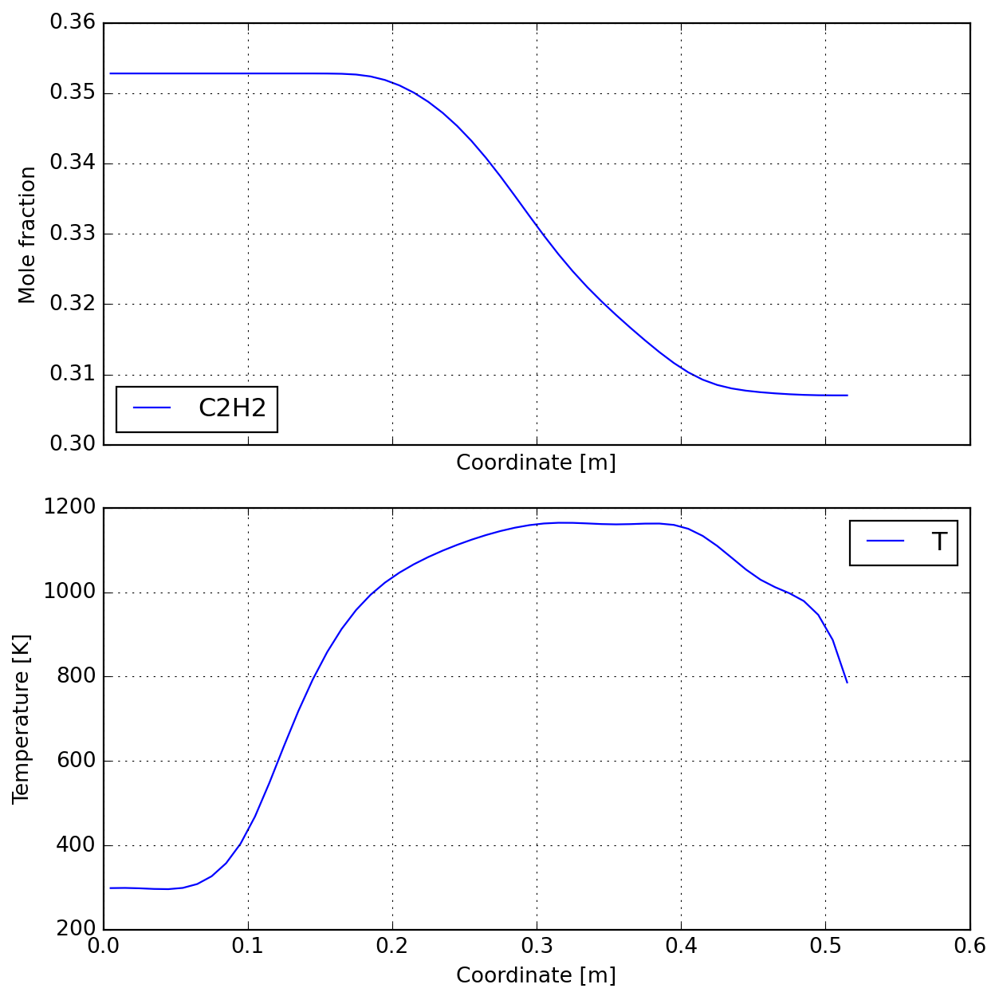

CPU times: total: 766 ms
Wall time: 779 ms
Work in progress!
CPU times: total: 766 ms
Wall time: 779 ms
CPU times: total: 1.89 s
Wall time: 1.93 s
Working on case no. 1
Working on case no. 2
Working on case no. 3
Working on case no. 4
Working on case no. 5
Working on case no. 6
Working on case no. 7
Working on case no. 8
Working on case no. 9
Working on case no. 10
Working on case no. 11
Working on case no. 12
Working on case no. 13
Working on case no. 14
CPU times: total: 27.4 s
Wall time: 27.5 sWorking on case no. 1
Working on case no. 2
Working on case no. 3
Working on case no. 4
Working on case no. 5
Working on case no. 6
Working on case no. 7
Working on case no. 8
Working on case no. 9
Working on case no. 10
Working on case no. 11
Working on case no. 12
Working on case no. 13
Working on case no. 14
CPU times: total: 10.4 s
Wall time: 10.4 s| N | P | Q | T | X_meas | X_dalmazsi_2017 | err_dalmazsi_2017 | err_graf_2007 | |
|---|---|---|---|---|---|---|---|---|
| 0 | 1 | 50 | 222 | 773 | 0.352 | 0.352786 | 0.223212 | 2.032933 |
| 1 | 2 | 50 | 222 | 873 | 0.364 | 0.352540 | -3.148330 | -1.550413 |
| 2 | 3 | 50 | 222 | 973 | 0.364 | 0.350258 | -3.775208 | -2.602299 |
| 3 | 4 | 50 | 222 | 1073 | 0.346 | 0.339812 | -1.788298 | -1.188026 |
| 4 | 5 | 50 | 222 | 1123 | 0.312 | 0.326556 | 4.665512 | 6.179187 |
| 5 | 6 | 50 | 222 | 1173 | 0.307 | 0.307034 | 0.010994 | 4.120820 |
| 6 | 7 | 50 | 222 | 1273 | 0.288 | 0.290866 | 0.995060 | 6.743916 |
| 7 | 8 | 30 | 222 | 1173 | 0.323 | 0.329143 | 1.901911 | 5.859843 |
| 8 | 9 | 30 | 222 | 1223 | 0.314 | 0.318436 | 1.412680 | 7.828360 |
| 9 | 10 | 100 | 222 | 1173 | 0.249 | 0.242491 | -2.613868 | 4.125649 |
| 10 | 11 | 100 | 222 | 1223 | 0.226 | 0.230372 | 1.934472 | 5.944962 |
| 11 | 12 | 100 | 222 | 1273 | 0.201 | 0.221251 | 10.075293 | 12.714431 |
| 12 | 13 | 100 | 378 | 1023 | 0.343 | 0.342777 | -0.065090 | 0.254930 |
| 13 | 14 | 100 | 378 | 1123 | 0.298 | 0.305793 | 2.615003 | 6.255879 |
| err_dalmazsi_2017 | err_graf_2007 | |
|---|---|---|
| 0 | 3.53261 | 5.758262 |